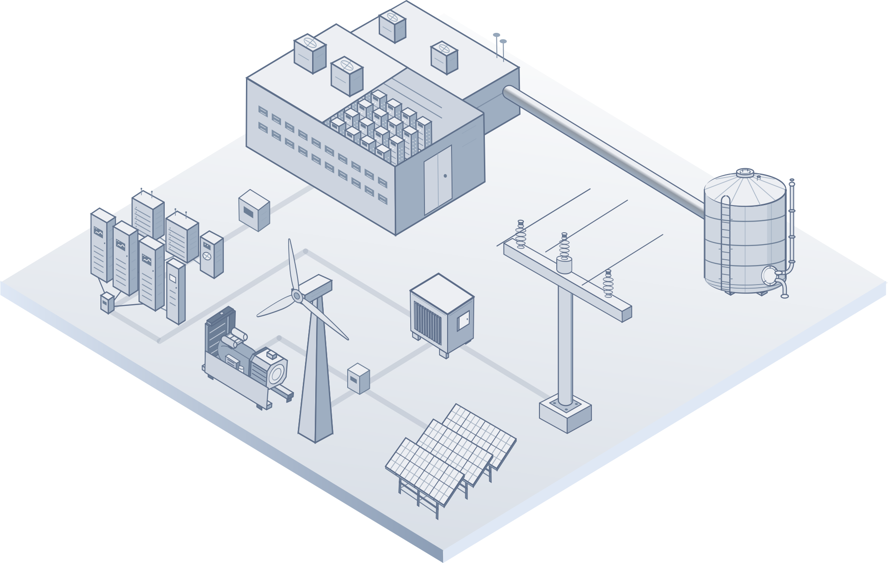

Low-carbon
power systems
Planning and operating electricity systems with renewable generation, energy storage and flexible demand.
PLANNING & OPERATIONENERGY SYSTEMS INTEGRATION
Connecting the future of computing with a low-carbon electricity system.
We study how data centres, intelligent optimisation and flexible energy systems can work together to support the grid.
Explore our research
WELCOME TO THE WEI SUN LAB
We bring together power systems, machine learning and optimisation to understand how computing and clean energy can evolve together.
Led by Dr Wei Sun, Chancellor’s Fellow in Energy Systems Integration at the University of Edinburgh, our research connects low-carbon electricity planning with the operation of flexible data centres.
01 / RESEARCH
From the electricity network to the computing job, we connect planning decisions with how systems operate.
Planning and operating electricity systems with renewable generation, energy storage and flexible demand.
PLANNING & OPERATIONApplied machine learning and optimisation for power flow, scheduling and decisions under complex system constraints.
MACHINE LEARNINGCoordinating AI workloads, cooling and UPS / battery systems to integrate computing demand with the grid.
COMPUTING & THE GRID02 / PROJECTS
CLEAN POWER PROCUREMENT
We investigate how data centres can procure and use clean electricity, combining renewable energy, storage and flexible demand. Our research explores how procurement strategies and coordinated energy planning can support the transition to a low-carbon power system.
Technical leadership on a project funded by the Department for Energy Security and Net Zero (DESNZ).
Exploring computing flexibility using PyPSA-GB, an open-source model of the Great Britain electricity system co-developed by Wei Sun.
Ensemble reinforcement learning aligns workloads with cleaner electricity while balancing carbon emissions and quality of service.
03 / PUBLICATIONS
Recent research on computing flexibility and intelligent power-system operation.
IEEE TRANSACTIONS ON SMART GRID
Y. Wang, W. Sun, P. Ren, and G. P. Harrison
Vol. 17, no. 1, pp. 297–308IEEE TRANSACTIONS ON INDUSTRY APPLICATIONS
P. Ren, W. Sun, Y. Wang, and G. P. Harrison
Early access · Linked version: arXiv preprintAPPLIED ENERGY
Y. Wang, W. Sun, and G. P. Harrison
Vol. 426, Part A, article 128584ARXIV · PREPRINT
P. Ren, W. Sun, and F. Teng
arXiv:2609.03030 · Not yet peer reviewed04 / PEOPLE
PRINCIPAL INVESTIGATOR
Chancellor’s Fellow in
Energy Systems Integration
University of Edinburgh
Wei studies how AI and data centres can support a low-carbon electricity system. His research uses applied data science and advanced optimisation to quantify computing flexibility and improve its integration with the power grid.
His current work explores shifting computing jobs across time and locations to align with renewable generation, alongside the integration of on-site storage and clean energy.
Co-developer of PyPSA-GB and co-organiser of the 1st International Workshop on Managing Global Energy Demand of AI Data Centres at Imperial College London.
PhD Student
PhD Student
PhD Student
PhD Student